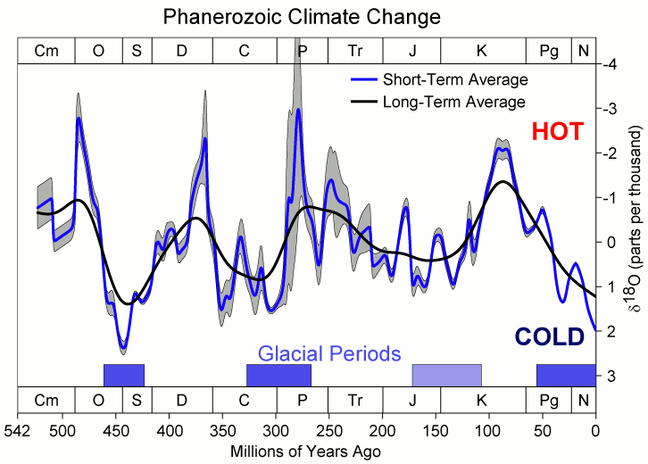

a brief history of life and the oceans

Fossils from Japan
Archean (4,000 Mya to 2,500 Mya)
-
The Earth would not be recognizable to us today. The atmosphere was a toxic mix of gases, including methane and ammonia.
-
First life appears somewhere in this period. They mostly just hang out and absorb ambient (heat) energy.
-
The planet is still extremely volatile, with volcanoes (see pic) found much more commonly than today.
-
Toward the end of this period the early life begins to evolve to take advantage of the ambient energy provided by the sun.
Proterozoic (2,500 Mya to 542 Mya)
-
No predators.
-
Also, most of the creatures in the (Oxygenated, not as salty) Ocean are pretty passive things.
-
Lots of nonvertebrates.
-
Most popular feature: ability to face toward incoming food stream (see pic).
Paleozoic (542 Mya to 251 Mya)
-
First multicellular explosion of life
-
Seas dominated by trilobytes during the Cambrian
-
First vertebrates resemble fish.
-
Started off with just scales, then they evolved themselves a backbone.
-
Some creatures go to land during this time
Mesozoic (251 Mya to 65.5 Mya)
-
This was a time of obscene dimensions. Huge dinosaurs on land, insects with massive wingspans, and unfathomably large oceanic creatures.
-
For most of the Mesozoic the climate stays the same temperature, but it spikes in the middle-to-late Cretaceous.
-
The increase in temperature melts the icecaps at the poles, resulting in very high ocean levels and confused early Paleontologists.

Cenozoic (65.5 Mya to present)
-
Called the "age of mammals" because the largest animals are mammals during this period (but mammals existed before).
-
La Brea tar pits have Cenozoic (Pleistocene) fossils
Sources
- http://www.ucmp.berkeley.edu/help/timeform.php
- http://en.wikipedia.org/wiki/File:Phanerozoic_Climate_Change.png
- http://bulbapedia.bulbagarden.net/wiki/Omanyte_(Pok%C3%A9mon)
- http://www.natureworldnews.com/articles/7679/20140620/see-fossils-up-close-and-personal-la-brea-tar-pits-reopen.htm